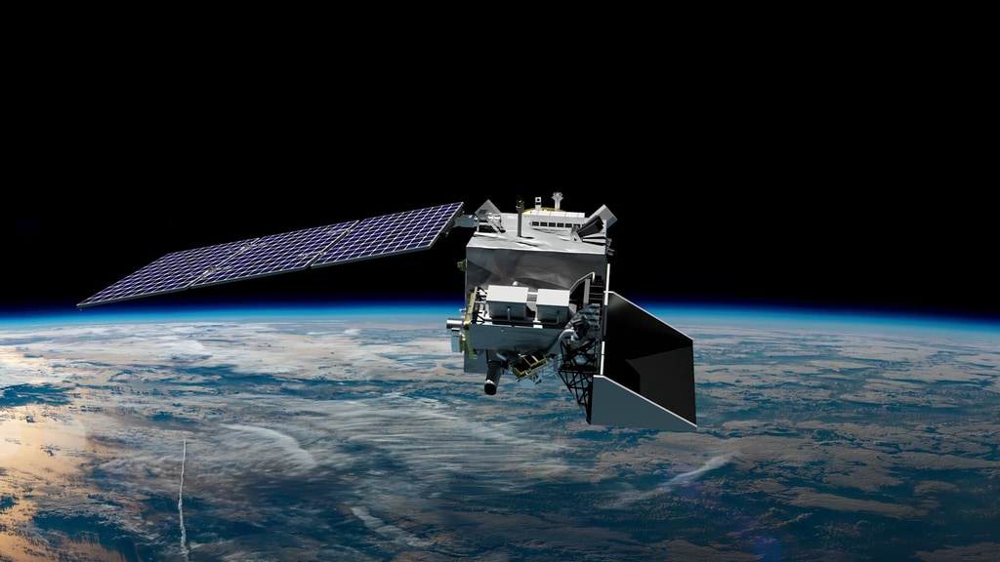

What is PACE ?
-

PACE Satellite: Monitoring Earth's Oceans and Atmosphere
OCTOBER 5, 2024The Plankton, Aerosol, Cloud, ocean Ecosystem (PACE) satellite was launched by NASA to monitor Earth's oceans and atmosphere. PACE collects high-resolution data about global ocean color, atmospheric particles (aerosols), and clouds. This information helps scientists understand the health of marine ecosystems, changes in ocean biology, and the impact of aerosols on climate.
-

Pace's Impact on Ocean Research
OCTOBER 3, 2024PACE offers unprecedented observations of ocean color, which is critical for monitoring plankton dynamics, detecting harmful algal blooms, and tracking changes in marine ecosystems. This data helps improve our understanding of how the oceans influence climate and vice versa.
Read More